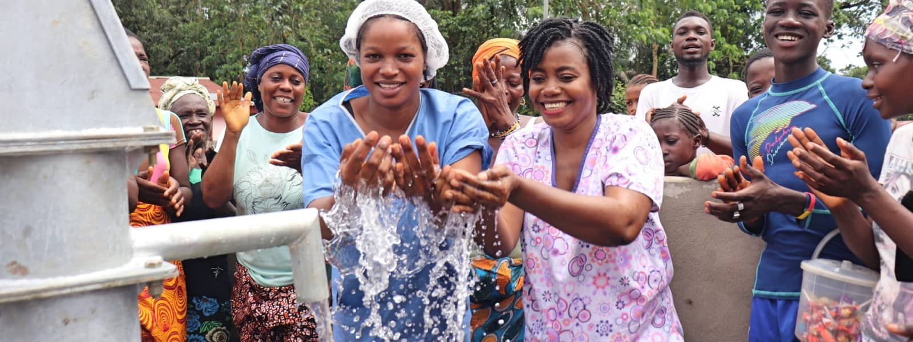
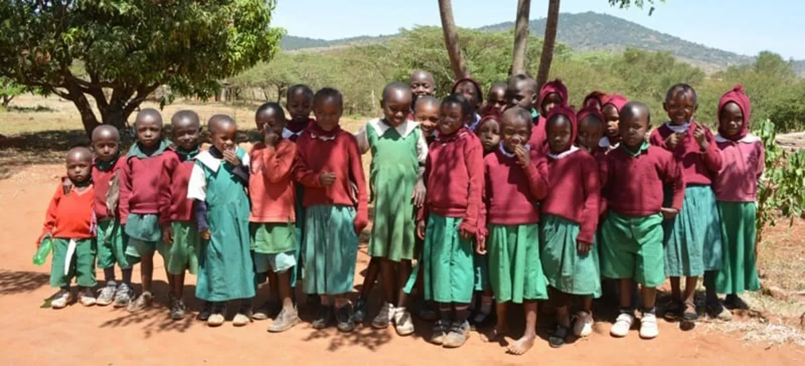
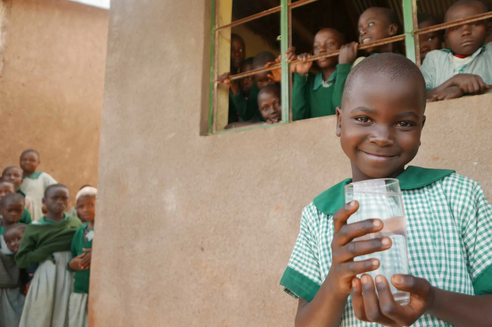
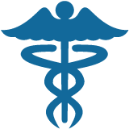
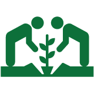

...begins with access to safe Water
Did you know that half of the world's hospital beds are filled with people suffering from a water-related disease? In developing countries, about 80% of illnesses are linked to poor water and sanitation conditions. 1 out of every 5 deaths under the age of 5 worldwide is due to a water-related disease. Clean and safe water is essential to healthy living.
Tiny worms and bacteria live in water naturally. Most of the bacteria are pretty harmless. But some of them can cause devastating disease in humans. And since they can't be seen, they can't be avoided.
Most of these waterborne diseases aren't found in developed countries because of the sophisticated water systems that filter and chlorinate
water to eliminate all disease carrying organisims. But typhoid fever, cholera and many other diseases still run rampant in the developing parts
of the world.

Every gift makes a huge impact
For about $34 per person, The Water Project is able to work with local partners to provide access to
clean water as well as hygiene and sanitation programs. These training programs greatly reduce the disease
burden in their communities, allowing villagers to increase their productivity and begin working themselves
out of poverty. You can be a part of the solution to reduce disease among the world's poorest communities.

With water right on school property, students won’t miss class to quench their thirst, clean their classrooms, or supply school
kitchens with water. With water at home, kids don’t waste homework time walking long distances in search of water
for their households.

Water projects close to home rescue people from drinking whatever dirty water they can find. More water also means less rationing,
so it’s easier to stay hydrated, wash hands, and clean homes, preventing future illnesses.

In our service areas, almost everyone has a farm or garden. To
them, a lack of water means a lack of food. Improved crop
irrigation equates to healthier and more plentiful crops.
Sourcing water when it’s scarce day after day saps everyone’s time and energy. With water at their fingertips, people spend more time investing in their households and livelihoods.